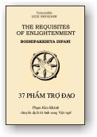

|
BuddhaSasana Home Page |
Vietnamese, with Unicode Times font |
|  |
Requisites
of Enlightenment Venerable Ledi Sayadaw |
|
EDITOR'S PREFACE With the present volume we present to our readers another treatise by the eminent Burmese scholar-monk, the late Venerable Ledi Sayadaw, whose Life Sketch appears in a work of his, published earlier in this series, "A Manual of Insight" (Vipassanà Dipani) ("The Wheel" No. 31/32). We believe that this present treatise is one of the most helpful expositions of Dhamma which we have been privileged to publish in "The Wheel" series. It offers not only a wealth of information on many aspects of the Teaching, but is also a forcefully reasoned and stirring appeal to earnest endeavour towards the Goal. We therefore, wish to recommend this work to our readers’ close and repeated study and reflection. This treatise has been reproduced from the journal The Light of the Dhamma (Rangoon), which regrettably has ceased publication. For permission of reprint we are grateful to the publishers, The Union of Burma Buddha Sàsana Council, Rangoon. In the present edition, many of the Pàli terms used in the original translation have been supplemented or replaced, by the English equivalents, for facilitating the reading of the treatise. The last chapter has been condensed. Otherwise only minor changes have been made in the diction. In the original publication, the term bodhipakkhiya-dhamma had been rendered by "Factors leading to Enlightenment", which, however, resembles too closely the customary translation of the term bojjhanga, by "Factors of Enlightenment" (see here Chapter VII). Therefore the title of the treatise in the original translation and the rendering of the term in the body of the text have been changed into "Requisites of Enlightenment", being one of the connota-tions of bodhipakkhiya-dhamma, as given in Chapter I. This nuance of meaning was chosen in view of the fact that this treatise does not deal with perfected constituents of Enlightenment (bodhi) already achieved, but with the approach to that goal by earnest cultivation of those seven groups of qualities and practices which form the 37 Bodhipakkhiya-dhammas. Nyanaponika Mahathera -ooOoo- BODHIPAKKHIYA-DIPANI
INTRODUCTION
Four Types of Capacity for Path Attainment It is stated in the Puggala-Pannatti (the "Book of Classification of Individuals", 160; Abhidhamma Pitaka) and in the Anguttara Nikàya (The Fours, No. 133) that, of the beings who encounter the Sàsana, i.e. the Teaching of the Buddha, four classes can be distinguished, viz.:
Of' these four classes of beings, an Ugghàtitannu (one who understands immediately) is an individual who encounters a Buddha in person [1] and who is capable of attaining the Paths and the Fruits through the mere hearing of a short concise discourse. A Vipancitannu is an individual who has not the capability of attaining the Paths and the Fruits through the mere hearing of a short discourse, but who yet is capable of attaining the Paths and the Fruits when the short discourse is expounded to him at some length. A Neyya is an individual who has not the capability of attaining the Paths and the Fruits through the hearing of a short discourse or when it is expounded to him at some length, but is one for whom it is necessary to study and take careful note of the sermon and the exposition, and then to practise the provisions contained therein for days, months, and years, in order that he may attain the Paths and the Fruits. This Neyya class of individuals can again be sub-divided into many other classes according to the period of practice which each individual finds necessary before he can attain the Paths and the Fruits, and which further is dependent on the pàramis (Perfections) which each of them has previously acquired, and the kilesas (defilements) which each has surmounted. These classes of individuals include on the one hand those for whom the necessary period of practice is seven days, and on the other, those for whom the necessary period of practice may extend to thirty or sixty years. Further classes also arise as for example in the case of individuals whose necessary period of practice is seven days; the stage of an Arahant may be attained if effort is made in the first or second period of life [2], while no more than the lower stages of the Paths and the Fruits can be attained if effort be made only in the third period of life. Then, again, putting forth effort for seven days means exerting as much as is in one's power to do so. If the effort is not of the highest order, the period of necessary effort becomes lengthened according to the laxity of the effort, and seven days may become seven years or longer. If the effort during this life is not sufficiently intense as to enable one to attain the Paths and the Fruits, then release from worldly ills cannot be obtained during the present Buddha Sàsana (Dispensation of a Buddha's Teaching) while release during future Buddha Sàsanas can be obtained only if the individual encounters them. No release can be obtained if no Buddha Sàsana is encountered. It is only in the case of individuals who have secured niyata vyàkarana (sure prediction made by a Buddha), that an encounter with a Buddha Sàsana and release from worldly ills is certain. An individual who has not attained "Sure prediction" (niyata vyàkarana) cannot be certain either of encountering a Buddha Sàsana or achieving release from worldly ills, even though he has accumulated sufficient pàramis to make both these achievements possible. These are considerations in respect of those individuals who possess the capabilities of attaining the Paths and the Fruits by putting forth effort for seven days, but who have not obtained "sure prediction". Similar considerations apply to the cases of those individuals who have the potentiality of attaining the Paths and the Fruits by putting forth effort for fifteen days, or for longer periods. A Padaparama is an individual who, though he encounters a Buddha Sàsana, and though he puts forth the utmost possible effort in both the study and practice of the Dhamma, cannot attain the Paths and the Fruits within this lifetime. All that he can do is to accumulate good habits and potentials (vàsanà). Such a person cannot obtain release from worldly ills during this lifetime. If he dies while practising samatha (Tranquillity) or vipassanà (Insight), and attains rebirth either as a human being or a deva in his next existence, he can attain release from worldly ills in that existence within the present Buddha Sàsana. Thus did the Buddha declare with respect to four classes of individuals. Three Types of Patients In the same sources referred to above, the Buddha gave another classification of beings, dividing them into three classes resembling three types of sick persons [3], namely: (1) A person who is certain of regaining health in due time even though he does not take any medicine or treatment. (2) A person who is certain of failing to make a recovery, and dying from the illness, no matter to what extent he may take medicines or treatment. (3) A person who will recover if he takes the right medicine and treatment, but who will fail to recover and die if he fails to take the right medicine and treatment. These are the three kinds of sick persons. Persons who obtained niyata vyàkarana (sure prediction made by a Buddha) from previous Buddhas, and who as such are certain of obtaining release from worldly ills in this life, resemble the first class of sick persons. A Padaparama class of individual resembles the second class of sick persons. Just as this second class of sick person has no chance of recovery from his illness, a Padaparama class of individual has no chance of obtaining release from worldly ills during this life. In future lives, however, he can obtain release either within the present Buddha Sàsana or within future Buddha Sàsanas. The story of the youth Chattamànava [4], of the frog who became a deva and of the ascetic Saccaka [5] are illustrations of persons who obtained release from worldly ills in their next following existences within the present Buddha Sàsana. A Neyya class of individual resembles the third class of sick persons. Just as a person of this third class is related to the two ways of either recovering or dying from the sickness, so is a Neyya individual related to the two eventualities of either obtaining release from worldly ills during the present life, or failing to obtain such release. If such a Neyya individual, knowing what is good for him according to his age, discards what should be discarded, searches for the right teacher, and obtains the right guidance from him and puts forth sufficient effort, he can obtain release from worldly ills in this very life. If, however, he becomes addicted to wrong views and wrong ways of conduct; if he finds himself unable to discard sensual pleasures; if although able to discard sensual pleasures he does not obtain the guidance of a good teacher; if although obtaining the guidance of a good teacher, he is unable to evoke sufficient effort; if although inclined to put forth effort he is unable to do so through old age; if although young he is liable to sickness, he cannot obtain release from worldly ills in this present life. King Ajàtasattu [6] the millionaire Mahàdhana's son [7], Bhikkhu Sudinna [8], are cases of persons who could not have release from worldly ills in this present existence. King Ajàtasattu failed to obtain release because he had committed parricide. It is stated that he will drift in future samsàra (round of rebirths) for two asankheyyas (unit followed by 140 ciphers) of world-cycles, after which he will become a paccekabuddha (Solitary Buddha). The millionaire Mahàdhana's son indulged himself so excessively in sensual pleasures during his youth that he was unable to attain tranquillity of mind when he grew older. Far from obtaining release from worldly ills, he did not even get the opportunity of associating with the Ti-ratana [9]. Seeing his plight at that stage, the Buddha said to Ànanda: "Ànanda, if this millionaire's son had become a bhikkhu in my sàsana during his youth or first period of his life, he would have become an Arahant and would have attained Parinibbàna [10] in this present life. If, otherwise, he had become a bhikkhu during the second period of his life, he would have become an Anàgàmi [11] and on death would have been reborn in the Suddhàvàsa brahma loka [12], whence he would attain parinibbàna. In the next alternative, if he had become a bhikkhu in my sàsana at the beginning of the third period of life, he would have become either a Sakadàgàmi (Once-Returner) or a Sotàpanna (Stream-enterer) and would have attained permanent release from rebirth in the apàya lokas [13]. Thus said the Buddha to the Venerable Ànanda. Thus, although, he (the millionaire Mahàdhana's son) possessed pàrami ripe enough to make his present life his last existence, not being a person who had secured "sure prediction", niyata vyàkarana, he failed to obtain release from worldly ills in his present life because of the upheavals caused by the defilements within him, and this is despite the fact that he had the opportunity of encountering the Buddha Sàsana. If further his period of existence in the Lower Regions (apàya loka) is prolonged because of evil acts done in this existence, he would not be able to rise again and emerge out of those apàya lokas in time for the sàsana of the future Metteyya Buddha. And, after that, the large number of world cycles that follow are world-cycles where no Buddhas appear," [14] there being no world-cycles within the vicinity of the present world where Buddhas are due to appear. Alas! far indeed is this millionaire's son from release from worldly ills even though he possessed pàrami (Perfections) ripe enough to make his present existence his last one. The general opinion current at the present day is that if the pàramis are complete, one cannot miss encountering a Buddha Sàsana even if one does not wish to do so, and that one's release from worldly ills is ensured even though one may not desire such release. These people fail to pay attention to the existence of niyata (i.e., one who has obtained a sure prediction made by a Buddha) and aniyata (one who has not obtained a sure prediction made by a Buddha). Considering the two texts from the Pitakas mentioned above, and the story of the millionaire Mahàdhanas' son, it should be remembered that aniyata neyya individuals can attain release from worldly ills in this life only if they put forth sufficient effort, even if they possess pàramì sufficient to enable them to obtain such release. If industry and effort are lacking, the Paths and the Fruits cannot be attained within the present Buddha Sàsana. Apart from these classes of persons, there are also an infinite number of other beings who, like the ascetics AÄàra and Uddaka (Majjh. 28), possess sufficient pàrami for release from worldly ills, but who do not get the opportunity because they happen to be in one or the other of the eight inopportune places (atthakkhanas) [15] where it is not possible to attain the Paths and the Fruits thereof. Necessary Conditions of Practice for Neyya and Padaparama Of the four classes of individuals mentioned, the Ugghàtitannù and the Vipancitannù classes can attain the Sotàpattimagga (Path of a Stream-winner) and the other higher stages of wisdom -- like Visàkhà and Anàthapindika [16] through the mere hearing of a discourse. It is not necessary for such individuals to practise the Dhamma according to the stages of Purification, such as Purification of Virtue (sìla-visuddhi), of Consciousness (citta-visuddhi) and so on. Be it remembered that this is also the case when devas and brahmàs attain release from worldly ills. Hence it should be noted that the courses of practice such as sìla-visuddhi and citta-visuddhi, laid down in the Pàli Canon, are only for the Neyya and Padaparama classes of individuals before their attainment of the Sotàpattimagga. These courses of practice are also for the first three classes of individuals prior to the achievement of the higher stages of the Paths and the Fruits. In the period after the attainment of Arahantship also, these courses of practice are used for the purpose of dittha-dhamma-sukha-vihàra (dwelling at ease in this present existence) [17] since Arahants have already gone through them. After the passing of the first thousand years (of the present Buddha Sàsana), which constituted the times of the Patisambhidhà-patta Arahant (Arahant possessing Analy-tical Knowledge), the period of the present Buddha Sàsana comprises the times of the Neyya and Padaparama classes of individuals alone. At the present day, only these two classes of individuals remain. Neyya-puggala Of these two classes of individuals, an individual of the Neyya class can become a Stream-winner (Sotàpanna) in this present life, if he faithfully practises the bodhipakkhiya dhamma comprising satipatthàna (four Foundations of Mindfulness), sammappadhàna (Right Exertion), etc. If he is lax in his practice, he can become a Sotàpanna only in his next existence after being reborn in the deva planes. If he dies while still aloof from these (bodhipakkhiya) Dhammas, such as satipatthàna, etc., he will become a total loss so far as the present Buddha Sàsana is concerned, but he can still attain release from worldly ills if he encounters the Sàsana of the next Buddha. Padaparama-puggala An individual of the Padaparama class can attain release within the present Buddha Sàsana after rebirth in the deva planes in his next existence, if he can faithfully practice these (bodhipakkhiya) Dhammas in his present existence. The Age of Ariyas (Noble Ones) still extant The five thousand years of the present Buddha Sàsana constitute, all of them, the Age of Saints. This Age of Saints will continue to exist so long as the Tipitakas (canonical Scriptures) remain in the world. The Padaparama class of individuals have to utilise the opportunity afforded by the encountering of the present Buddha Sàsana to accumulate as much of the nuclii or seeds of Pàrami as they can within this lifetime. They have to accumulate the seeds of sìla (Morality). They have to accumulate the seeds of samàdhi (Concentration). They have to accumulate the seeds of pannà (Wisdom). Morality (Sìla) Of these three kinds of accumulations, sìla (Morality), samàdhi (Concentration), Pannà (Wisdom), the seeds of sìla mean: Panca Sila [18], Ajìvatthamaka Sìla [19], Atthànga Uposatha Sìla [20], Dasanga Sìla [21], in respect of ordinary laymen and women, and the Bhikkhu Sìla [22] in respect of the bhikkhus. Concentration (Samàdhi) The seeds of samàdhi (Concentration) mean the efforts to achieve parikamma-samàdhi (Preparatory Concentration) through one or other of the forty objects of meditation, such as the ten kasinas (meditation devices), or, if further efforts can be evoked, the efforts to achieve upacàra-samàdhi (Access Concentration) or, if still further efforts can be evoked, the efforts to achieve appanà-samàdhi (Attainment Concentration). Wisdom (Pannà) The seeds of pannà mean the cultivation of the ability to analyse the characteristics and qualities of rùpa (Material Phenomena), nàma (Mental Phenomena), khandhà (Constitituent groups of existence), àyatana (Bases), dhàtu (Elements), sacca (Truths), and the paticcasamuppàda (Dependent Origination), as well as the cultivation of insight into the three characteristics of existence (lakkhana), namely, anicca (Impermanence), dukkha (Suffering), anattà (Impersonality). Of the three kinds of seeds of Path-Knowledge (magga-nàna) and Fruition-Knowledge (phala-nàna) [23] sìla and samàdhi are like ornaments that permanently adorn the world and exist even in the sunna (void) world-cycles, that is, world-cycles where no Buddhas arise. The seeds of sìla and samàdhi can be obtained at will at any time. But the seeds of pannà, which are related to rùpa, nàma, khandhà, àyatana, dhàtu, sacca, and paticcasamuppàda can be obtained only when one encounters a Buddha Sàsana. Outside of a Buddha Sàsana one does not get the opportunity of even hearing the mere mention of words associated with pannà, though an infinite number of "sunna" world-cycles (void of a Buddha) may have passed away. Hence, those persons of the present day who are fortunate enough to be born into this world while a Buddha Sàsana flourishes, if they intend to accumulate the seeds of Path and Fruition-Knowledge for the purpose of securing release from worldly ills in a future existence within a future Buddha Sàsana, should pay special attention to the knowledge of the paramattha [24] (ultimate realities), which is extremely difficult for one to come across, more than attempting the accumulation of the seeds of sìla and samàdhi. At the least, they should attempt to obtain an insight into how the Four Great Primaries (mahà-bhùta) - pathavì, àpo, tejo and vàyo [25] constitute one's body. If they acquire a good insight into the four great elements, they obtain a sound collection of the seeds of pannà which are most difficult of acquisition, and this is so even though they may not acquire any knowledge of the other portions of the Abhidhamma. It can then be said that the difficult attainment of rebirth within a Buddha Sàsana has been made worthwhile. Vijjà (Knowledge), and Carana (conduct) Sìla and samàdhi constitute Carana, while pannà constitutes Vijjà. Thus are vijjà-carana (Knowledge and Conduct) constituted. Vijjà resembles the eyes of a human being, while carana resembles the limbs. Vijjà is like eyes in birds, while carana is like wings. A person who is endowed with Morality and Concentration, but lacks Wisdom, is like one who possesses complete and whole limbs but is blind of both eyes. A person who is endowed with vijjà (Knowledge) but lacks carana (Conduct), is like one who has good eyesight but is defective in his limbs. A person who is endowed with both vijjà and carana is like a normally whole person possessing both good eyesight and healthy limbs. A person who lacks both vijjà and carana is like one defective in eyes and limbs, and is not worthy of being called a human being. Consequences of having Carana only Amongst the persons living within the present Buddha Sàsana, there are some who are fully endowed with Morality and Concentration, but do not possess the seeds of vijjà (Knowledge) such as Insight into the nature of Material Qualities, Mental Qualities and Constituent Groups of Existence. Because they are strong in carana they are likely to encounter the next Buddha Sàsana, but because they lack the seeds of vijjà they cannot attain Enlighten-ment, even though they hear the discourse of the next Buddha in person. They are like Làludàyì Thera [26], Upananda Thera [27], the Chabbaggìya bhikkhus [28], and the King of Kosala [29] who all lived during the lifetime of the Omniscient Buddha. Because they were endowed with the previously accumulated Good Conduct (carana) such as almsgiving and morality, they had the opportunity to associate with the Supreme Buddha, but since they lacked previously accumulated Knowledge (vijjà), the discourses of the Buddha which they often heard throughout their lives, fell, as it were, on deaf ears. Of having Vijjà only There are others who are endowed with vijjà such as Insight into the Material and Mental Qualities and the Constituent Groups of Existence, but who lack carana such as dàna (Almsgiving), nicca sìla (Permanent Morality) and uposatha sìla (Precepts observed on Fasting days). Should these persons get the opportunity of meeting and hearing the discourses of the next Buddha they can attain Enlightenment because they possess vijjà, but since they lack carana it would be extremely difficult for them to get the opportunity of meeting the next Buddha. This is so because there is an antara-kappa (intervening world-cycle) between the present Buddha Sàsana and the next. In case these beings wander within the Sensuous Sphere during this period, it means a succession of an infinite number of existences and rebirths, and an opportunity to meet the next Buddha can be secured only if all these rebirths are confined to the Happy Course of Existence. If, in the interim, a rebirth occurs in one of the Four Lower Regions, the opportunity to meet the next Buddha would be irretrievably lost, for one rebirth in one of the Four Lower Worlds is often followed by an infinite number of rebirths in one or other of them. Those persons whose acts of dàna (Almsgiving) in this life are few, who are ill-guarded in their bodily acts, unrestrained in their speech, and unclean in their thoughts, and who thus are deficient in carana (Conduct), possess a strong tendency to be reborn in the Four Lower Worlds when they die. If through some good fortune they manage to be reborn in the Happy Course of Existence, wherever they may be reborn they are, because of their previous lack of carana such as dàna, likely to be deficient in riches, and likely to meet with hardships, trials, and tribulations in their means of livelihood, and thus encounter tendencies to rebirth in the apàya lokas. Because of their lack of the carana of nicca sìla and uposatha sìla, they are likely to meet with disputes, quarrels, anger and hatred in their dealings with other persons, in addition to being susceptible to diseases and ailments, and thus encounter tendencies towards rebirth in the apàya lokas. Thus will they encounter painful experiences in every existence, gathering undesirable tendencies, leading to the curtailment of their period of existence in the Happy Course of Existence and causing rebirth in the Four Lower Worlds. In this way the chances of those who lack carana, for meeting the next Buddha are very slight indeed. The Essential Point In short, the essential fact is, only when one is endowed with the seeds of both vijjà and carana can one obtain release from worldly ills in one's next existence. If one possesses the seeds of vijjà alone, and lacks the seeds of carana such as dàna and sìla, one will fail to secure the opportunity of meeting the next Buddha Sàsana. If, on the other hand, one possesses the seeds of carana but lacks the seeds of vijjà, one cannot attain release from worldly iIls even though one encounters the next Buddha Sàsana. Hence, those Padaparama individuals of today, be they men or women, who look forward to meeting the next Buddha Sàsana, should attempt to accumulate within the present Buddha Sàsana the seeds of carana by the practice of dàna, sìla and samatha bhàvanà (Practice of Tranquillity), and should also, at the least, with respect to vijjà, try to practise insight into the Four Great Primaries and thus ensure meeting the next Buddha Sàsana, and having met it, to attain release from worldly ills. When it is said that dàna is carana, it comes under the category of saddhà (Faith), which is one of the saddhammas or practical conduct of good people, which again come under the fifteen carana-dhammas. The fifteen carana dhammas are :
These fifteen dhammas are the property of the highest jhànalàbhi(Attainer of Jhànas). So far as sukkhavipassaka (practising Insight only) individuals are concerned, they should possess eleven of the carana dhammas, i.e. without the four Jhànas. For those persons who look forward to meeting the next Buddha Sàsana, dàna, uposatha-sìla, and the seven saddhammas are the essentials. Those persons who wish to attain the Paths and the Fruits thereof in this very life must fulfil the first eleven carana-dhammas, i.e. sìla, indriyasamvara, bhojane mattannutà, jàgariyànuyoga, and the seven saddhammas. Herein, sìla means Ajìvatthamaka nicca sìla (Permanent practice of Morality ending with right livelihood), Indriyasamvara means guarding the six sense-doors -- eyes, ears, nose, tongue, body and mind. Bhojane mattannutà means taking just sufficient food to preserve the balance of the corporeality group in the body and being satisfied therewith. Jàgariyànuyogo means not sleeping during the day, and sleeping only during one period (of the three periods) of the night, practising bhàvanà (Mental Concentration) during the other two periods. Saddhamma means:
For those who wish to become Sotàpannas during this life there is no special necessity to practise dàna (Almsgiving). But let those who find themselves unable to evoke sufficient effort towards acquiring the ability to obtain release from worldly ills during the present Buddha Sàsana make special attempts to practise dàna (Almsgiving) and uposatha-sìla (Precepts observed on Fasting Days). Order of Practice and Those who await the next Buddha Since the work in the case of those who depend on and await the next Buddha consists of no more than acquiring accumulation of pàrami, it is not strictly necessary for them to adhere to the order of the stages of practice laid down in the Pà1i Texts, viz., sìla, samàdhi and pannà. They should not thus defer the practice of samàdhi before the completion of the practice of sìla, or defer the practice of pannà before the completion of the practice of samàdhi. In accordance with the order of the seven visuddhis (Purifications) such as (1) Sìla-visuddhi (Purification, of Virtue), (2) Citta-visuddhi (Purification of Consciousness), (3) Ditthi-visuddhi (Purification of View), (4) Kankhàvitarana-visuddhi (Purification by Overcoming Doubt), (5) Maggàmagganànadassana-visuddhi (Purification by Knowledge and Vision of What is and What is Not Path), (6) Patipadànànadassana-visuddhi (Purification by Knowledge and Vision of the Way), and (7) Nànadassanavisuddhi (Purification by Knowledge and Vision), they should not postpone the practice of any course for a visuddhi until the completion of the respective previous course. Since they are persons engaged in the accumulation of as much of the seeds of pàrami as they can, they should contrive to accumulate the largest amount of sìla, samàdhi, and pannà, that lies in their power. When it is stated in the Pàli Texts that citta-visuddhi should be practised only after the completion of the practice of sìla-visuddhi, that ditthi-visuddhi should be practised only after the completion of the practice of citta-visuddhi, that kankhàvitarana-visuddhi should be practised only after the completion of the practice of ditthi-visuddhi, that the work of anicca, dukkha, and anattà bhàvanà (Contemplation of Impermanence, Suffering and Impersonality) should be undertaken only after the completion of the practice of kankhàvitarana-visuddhi, --- the order of practice prescribed is meant for those who attempt the speedy realisation of the Paths and the Fruits thereof in this very life. Since those who find themselves unable to call forth such effort and are engaged only in the accumulation of the seeds of pàrami, are persons occupied in grasping whatever they can, of good practices, it should not be said in their case that the work of samatha manasikàra citta-visuddhi (the practice of Purification of Consciousness consisting of advertence of mind to tranquillity) should not be undertaken before the fulfilment of sìla-visuddhi. Even in the case of hunters and fishermen, it should not be said that they should not practise samatha-vipassanàmanasikàra (advertence of mind towards Tranquillity and Insight) unless they discard their avocations. One who says so causes dhammantaràya (Obstruction to the Dhamma). Hunters and fishermen should, on the other hand, be encouraged to contemplate the noble qualities of the Buddha, the Dhamma, and the Sangha. They should be induced to contemplate as much as is in their power, the characteristic of loathsomeness in one's body. They should be urged to contemplate the liability of oneself and all creature to death. I have come across the case of a leading fisherman who, as a result of such encouragement, could repeat fluently from memory the Pàli Text and "nissaya" (word for word translation) of the Abhidhammattha Sangaha, and the Paccaya Niddesa of the Patthàna (Book of Relations), while still following the profession of a fisherman. These accomplishments constitute very good foundations for the acquisition of vijjà (Knowledge). At the present time, whenever I meet my dàyaka upàsakas (lay disciples who contribute to a Bhikkhu's upkeep), I tell them, in the true tradition of a Bhikkhu, that even though they are hunters and fishermen by profession, they should be ever mindful of the noble qualities of Three Jewels and three characteristics of existence. To be mindful of the noble qualities of the Ti-Ratana (Triple Gem) constitutes the seed of carana. To be mindful of the three characteristics of existence constitutes the seed of vijjà. Even hunters and fishermen should be encouraged to practise those advertences of mind. They should not be told that it is improper for hunters and fishermen to practise advertence of mind towards samatha (Tranquillity) and vipassanà (Insight). On the other hand, they should be helped towards better understanding, should they be in difficulties. They should be urged and encouraged to keep on trying. They are in that stage when even the work of accumulating pàramis and good tendencies is to be extolled. Loss of Opportunity to attain the seed of Vijjà through Ignorance of the value of the present times Some teachers who are aware only of the existence of direct and unequivocal statements in the Pàli Texts regarding the order of practice of the seven visuddhis (Purifications), but who take no account of the value of the present times, say that in the practices of samatha and vipassanà (Tranquillity and Insight) no results can be achieved unless sìla-visuddhi (Purification of Virtue) is first fulfilled, whatever be the intensity of the effort. Some of the uninformed ordinary folk are beguiled by such statements. Thus has the dhammantaràya (Obstruction to the Dhamma) occurred. These persons, because they do not know the nature of the present times, will lose the opportunity to attain the seeds of vijjà which are attainable only when a Buddha Sàsana is encountered. In truth, they have not yet attained release from worldly ills and are still drifting in samsàra (round of rebirths) because, though they have occasionally encountered Buddha Sàsanas in their past inconceivably long samsàra where Buddha Sàsanas more numerous than the grains of sands on the banks of the Ganges have appeared, they did not acquire the foundation of the seeds of vijjà. When seeds are spoken of, there are seeds ripe or mature enough to sprout into healthy and strong seedlings, and there are many degrees of ripeness or maturity. There are also seeds that are unripe or immature. People who do not know the meaning of the passages they recite or who do not know the right methods of practice even though they know the meaning, and who thus by custom or tradition read, recite, and count their beads while performing the work of contemplating the noble qualities of the Buddha, and anicca, dukkha and anattà possess seeds that are unripe and immature. These unripe seeds may be ripened and matured by the continuation of such work in the existences that follow, if opportunity for such continued work occurs. The practice of samatha (Tranquillity) until the appearance of parikamma nimitta [30] and the practice of vipassanà (Insight) until insight is obtained into rùpa and nàma (Matter and Mind) even once, are mature seeds filled with pith and substance. The practice of samatha until the appearance of uggaha-nimitta and the practice of vipassanà until the acquisition of sammasana-nàna [31] even once, are seeds that are still more mature. The practice of samatha until the appearance of patibhàga-nimitta [32], and the practise of vipassanà until the occurrence of udayabbayanàna [33] even once, are seeds that are yet more highly mature. If further higher efforts can be made in both samatha and vipassanà, still more mature seeds can be obtained bringing great success. Adhikàra (Assiduous and successful practice) When it is said in the Pàli Texts that only when there has been adhikàra in previous Buddha Sàsanas can relative Jhànas, the Paths and the Fruits be obtained in the following Buddha Sàsanas, the word "adhikàra" means "successful seeds." Nowadays, those who pass their lives with traditional practices that are but imitation samatha and imitation vipassanà do not come within the purview of persons who possess the seeds of samatha and vijjà which can be called adhikàra. Of the two kinds of seeds, those people who encounter a Buddha Sàsana, but who fail to secure the seeds of vijjà, suffer great loss indeed. This is so because the seeds of vijjà which are related to rùpa and nàma dhamma (bodily and mental processes) can only be obtained within a Buddha Sàsana, and that only when one is sensible enough to secure them. Hence, at the present time, those men and women who find themselves unable to contemplate and investigate at length into the nature of rùpa and nàma dhamma, should throughout their lives undertake the task of committing the four Great Primaries to memory, then of contemplating on their meaning and of discussing them, and lastly of seeking insight into how they are constituted in their bodies. Here ends the part showing, by a discussion of four classes of individuals and three kinds of individuals as given in the Sutta and Abhidhamma Pitakas, that (1) those persons who within the Buddha Sàsana do not practise Samatha and Vipassanà but allow the time to pass with, imitations, suffer great loss as they fail to utilize the unique opportunity arising from their existence as human beings within a Buddha Sàsana, (2) this being the time of Padaparama and Neyya classes of persons, if they heedfully put forth effort, they can secure ripe and mature seeds of Samatha and Vipassanà, and easily attain the supramundane benefit either within this life or in the deva loka (Deva abodes) in the next life -- within this Buddha Sàsana or within the Sàsana of the next Buddha, (3) they can derive immense benefit from their existence as human beings during the Buddha Sàsana. Here ends the exposition of the three kinds and the four kinds of individuals. A word of advice and warning If the Tipitaka which contains the discourses of the Buddha delivered during forty-five vassas (rainy seasons) be condensed, and the essentials extracted, the thirty-seven bodhipakkhiya-dhamma (Requisites of Enlightenment) are obtained. These thirty-seven bodhipakkhiya-dhamma constitute the essence of the Tipitaka. If these be further condensed, the seven visuddhis (Purifications) are obtained. If again the seven visuddhis be condensed, they become sìla (Morality), samàdhi (Concentration), and pannà (Wisdom). These are called adhisìla sàsana (The Teaching of Higher Morality), adhicitta sàsana (The Teaching of Higher Mentality), and adhipannà sàsana (The Teaching of Higher Wisdom). They are also called the three sikkhàs (Trainings). When sìla is mentioned, the essential for laymen is nicca sìla (Permanent Morality). Those people who fulfil nicca sìla become endowed with carana (Good Conduct) which, with vijjà (Knowledge), enables them to attain the Paths and the Fruits. If these persons can add the refinement of uposatha sìla over nicca sìla, it is much better. For laymen, nicca sìla means àjivatthamaka sìla [34]. That sìla must be properly and faithfully kept. If because they are puthujjanas (worldlings) they break the sìla, it can be re-established immediately by renewing the undertaking to keep the sìla for the rest of their lives. If, on a future occasion, the sìla is again broken, it can again be similarly cleansed, and every time this cleansing occurs, the person concerned again becomes endowed with sìla. The effort is not difficult. Whenever nicca sìla is broken, it should be immediately re-established. In these days, persons endowed with sìla abound in large numbers. But such persons are very rare who have attained perfect concentration in one or other of the kasina exercises (meditation devices), or in the practice of asubha-bhàvanà (meditation of loathsomeness), etc., as also persons who have sometimes attained insight into physical and mental phenomena, the three characteristics, etc. Such persons are very rare because these are times when Wrong Teachings (micchàdhamma) are ripe that are likely to cause dhammantaràya, (danger and obstruction to the Dhamma). Wrong Teachings By Wrong Teachings (micchà-dhamma) likely to cause Obstruction to Dhamma (dhammantaràya) are meant such views, practices, and limitations as the inability to see the dangers of samsàra, the belief that these are times when the Paths and the Fruits can no longer be attained, the tendency to defer effort until the pàramis ripen, the belief that persons of the present day are dvi-hetuka [35], the belief that the great teachers of the past were non-existent, etc. Even though it does not reach the ultimate, no kusala kamma (wholesome volitional action) is ever rendered futile. If effort be made, a kusala kamma (wholesome volitional action) is instrumental in producing pàrami in those who do not possess pàrami. If no effort be made, the opportunity to acquire pàrami is lost. If those whose pàramis are immature put forth effort, their pàramis become ripe and mature. Such persons can attain the Paths and Fruits in their next existence within the present Sàsana. If no effort be made, the opportunity for the pàrami to ripen is lost. If those whose pàrami is ripe and mature put forth effort, the Paths and the Fruits can be attained within this life. If no effort be made the opportunity to attain the Paths and the Fruits is lost. If persons who are dvi-hetuka put forth effort, they can become ti-hetuka [36] in their next existence. If they do not put forth effort, they cannot ascend from the stage of dvi-hetuka and will slide down to the stage of ahetuka [37] . Suppose, there is a certain person who plans to become a bhikkhu. If another person says to him, "Entertain the intention only if you can remain a monk all your life. Otherwise do not entertain the idea", -- this would amount to dhammantaràya, an obstruction of Dhamma. The Buddha said: "I declare that the mere arising of an intention of performing good deeds is productive of great benefit" (Majjh. No. 8). To disparage either the act of dàna (alms-giving) or to discourage the performer of dàna, may invoke punnantaràya on such a person, i.e. he causes obstruction to the performance of meritorious actions. If acts of Morality, Concentration (meditation) and Wisdom, or those who perform them are disparaged, a dhammantaràya may be caused, i.e. an Obstruction to Dhamma. If Obstruction to Meritorious Actions is caused, one is liable to be bereft of power and influence, of property and riches, and be abjectly poor, in the lives that follow. If Obstruction to Dhamma is caused, one is liable to be defective in conduct and behaviour and defective of sense, and thus be utterly low and debased in the existences that follow. Hence, let all beware! Here ends the section showing how the rare opportunity of rebirth as a human being can be made worthwhile, by ridding oneself of the wrong Dhammas mentioned above, and putting forth effort in this life so as to close the gates of the four Lower Worlds (apàya) in one's future Samsàra (round of rebirths), or else to accumulate the seeds that will enable one to attain release from wordly ills in the next following existence or within the next Buddha Sàsana, through the practice of Tranquillity (samatha) and Insight (vipassanà), with resolution, zeal and diligence. Notes: [1] This is not mentioned in the canonical texts referred to above, and their commentaries. (Ed.) [2] Three periods of life are usually distinguished, viz. youth, middle-age, and old-age. See 'Path of Purification' (Visuddhi Magga), tr. by Nànamoli, p. 721. [3] Puggala-Pannatti §100f; Anguttara, Tika-nipàta (The Threes) No. 22 (see "The Wheel" No. 155/158, p. 18). [4] Vimàna Vatthu [5] Majjhima Nikàya No. 36. [6] Dìgha Nikàya No. 2: Sàmannaphala Sutta. [7] Dhammapada Commentary -- Peta Vatthu [8] Vinaya Pitaka, Pàràjikà. [9] Ti-ratana, "The Triple Gem": Buddha, Dhamma, Sangha. [10] Parinibbàna : "Full Nibbàna". The death of an Arahant is known as attaining parinibbàna. [11] Anàgàmi: a "Non-Returner", the third of the four stages of sanctitude. He is no longer reborn in the world of sensuality (kàma-loka). [12] Suddhàvàsa brahma loka: "Pure Abodes", are a group of 5 heavens belonging to the Form-Sphere, where only the "Never-Returners" are being reborn, and in which they attain Arahantship and Nibbàna. [13] Apàya lokas: The four Lower Regions of Misery. They are: the animal world, the ghost-world, the demon-world and hell. [14] Sunna-kappas: "Zero" world-cycles. [15] Dìgha Nikàya, Pàthika-vagga, Dasuttara Sutta; Anguttara Nikàya III; Atthaka-nipàta, Akkhana Sutta, p. 60; -- (i) paccantaro - a border district where the Buddha Sàsana does not flourish; (ii) Arùpino - the four Brahma planes of the Formless-sphere; (iii) Vitalingo - persons with congenital defects such as idiocy, etc.; (iv) Asannasatta - a brahma plane of the Form-Sphere of non-consciousness.; (v) Micchà-ditthi - birth among people holding wrong views; (vi) Peta - the Ghost world; (vii) Tiracchàna - the animal world; and (viii) Niraya - hell. [16] Dhammapada Commentary, stories relating to verses 1 and 18. [17] In an Arahant there arises the knowledge of his freedom, and he realises:"Rebirth is no more; I have lived the pure life; I have done what ought to be done; I have nothing more to do for the realisation of Arahantship." Thus he lives at ease in this existence. [18] The Five Precepts. They are basic and constitute the minimum which every man or woman must observe. They are: abstention from killing, stealing, improper sexual intercourse, telling lies, and taking intoxicants. [19] The three constituents of the Morality-group of the Eightfold Path when considered in detail, become Ajìvatthamaka sìla (Morality ending with the practice of Right Livelihood) in the following way:1. I will abstain from taking life. 2. I will abstain from stealing. 3. I will abstain from indulging in improper sexual intercourse and taking intoxicant drugs. 4. I will abstain from telling lies. 5. I will abstain from setting one person against another. 6. I will abstain from using rude and rough words. 7. I will abstain from frivolous talk. 8. I will abstain from improper livelihood. [20] The Eight Precepts are: Abstention from: (1) killing, (2) stealing, (3) unchastity, (4) lying, (5) intoxicants, (6) eating after mid-day, (7) dancing, singing, music and shows, garlands, scent, cosmetics and adornment etc. (8) luxurious and high beds. [21] The Ten Precepts. This is the polished form of Attha-Sìla. No. 7 of the Eight Precepts is split into two parts, and No. 10 is "abstinence from accepting gold and silver." [22] Bhikkhu sìla: the four kinds of the monk’s Moral Purity (catupàri-suddhi-sìla) are :– (1) Restraint with regard to 227 Vinaya Rules; (2) Restraint of the senses; (3) Restraint with regard to one’s livelihood; (4) Morality with regard to the 4 requisites. [23] Magga-nàna: Knowledge of the 4 Holy Paths, i.e. of Stream-entry, etc.:- Phala-nàna: Knowledge of the Fruits thereof. [24] Paramattha: Truth in the ultimate sense; absolute truth. The Abhidhammattha Sangaha lists four paramattha dhammas, namely, Citta (Consciousness), Cetasika (Mental factors), Rùpa (Material qualities) and Nibbàna. [25] Pathavì (Element of Extension), Àpo (Element of Liquidity or Cohesion), Tejo (Element of Kinetic Energy), and Vàyo (Element of Motion or Support); popularly called: earth, water, fire and wind. [26] Dhammapada-Commentary, Story relating to Verse 64. [27] Dhammapada-Commentary, Story relating to Verse 158 "Thc Greedy Monk." [28] Vinaya Pitaka, Mahàvagga [29] Dhammapada- Commentary, Story relating to Verse 60. [30] Nimitta is the mental image which arises in the mind by the successful practice of certain concentration exercises. The image physically perceived at the very beginning of concentration is called the Preparatory Image or Parikamma Nimitta. The still unsteady and unclear image which arises after the mind has reached a certain degree of concentration is called Acquired Image or Uggaha-Nimitta. This is a mental image. [31] Sammasana-nàna: Observing, exploring, grasping, determining all phenomena of existence as impermanent, miserable, and impersonal, which precedes the flashing up of clear Insight. [32] The fully clear and immovable image that arises at a greater degree of concentration is called the Counter-image or Patibhàga-Nimitta. This also is a mental image. [33] Knowledge arising from the Contemplation of Arising and Vanishing. It is the 1st of the 9 insight-knowledges constituting the Patipadànànadassana-Visuddhi (Purification by Knowledge and Vision of the Way). [34] Àjivatthamaka sìla -- See Note 2, page 12. [35] Dvi-hetuka-patisandhi. This refers to a rebirth with only two good root-conditions, viz. Non-greed (alobha) and Non-hate (adosa). Beings so reborn cannot attain the Paths and Fruitions in their present life, as they lack the third root-condition, Non-delusion (amoha). [36] Tihetuka-patisandhhi: rebirth with all three good root-conditions alobha, adosa, amoha. [37] Ahetuka : a being reborn without any of the good root-conditions. -ooOoo- Top
of page | 00 | 01-2
| 03 | 04 | 05
| 06 | 07 | 08
| 09 | 10 |
Sincere thanks to Mr. Sunanda
Pham Kim Khanh for supplying this electronic copy
(Binh Anson, 05-2002)
[Trở
về trang Thư Mục]
updated: 11-05-2002